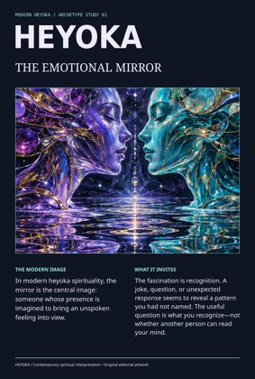
Heyoka: Mirroring
Iridescent surrealism · Surreal artwork + Vixl composition · Editable type and geometry · PDF / PNG / SVG
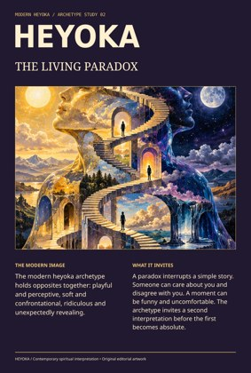
Heyoka: Paradox
Celestial paradox · Surreal artwork + Vixl composition · Editable type and geometry · PDF / PNG / SVG
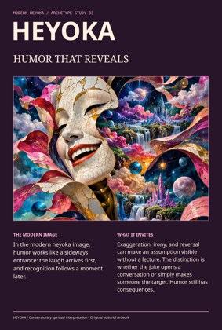
Heyoka: Disruptive humor
Cosmic carnival · Surreal artwork + Vixl composition · Editable type and geometry · PDF / PNG / SVG
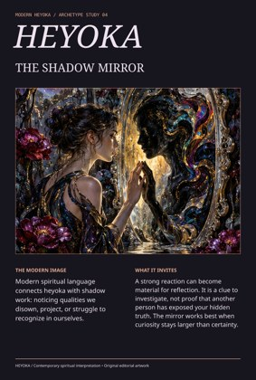
Heyoka: Shadow work
Mystical shadow garden · Surreal artwork + Vixl composition · Editable type and geometry · PDF / PNG / SVG
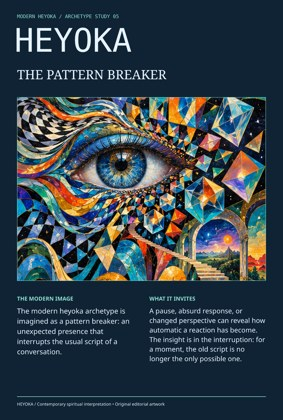
Heyoka: Pattern interruption
Prismatic psychedelia · Surreal artwork + Vixl composition · Editable type and geometry · PDF / PNG / SVG
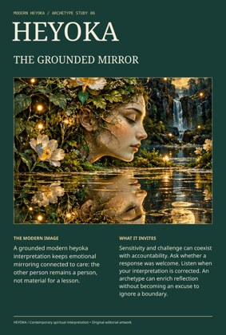
Heyoka: Relationships & boundaries
Botanical dreamscape · Surreal artwork + Vixl composition · Editable type and geometry · PDF / PNG / SVG
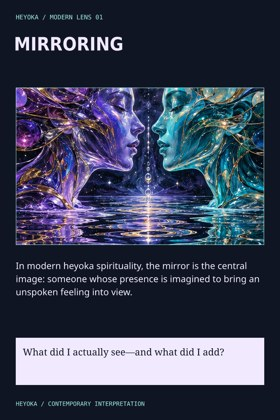
Heyoka lens: Mirroring
Psychedelic concept card · Iridescent surrealism · Heyoka-specific content · Editable layout
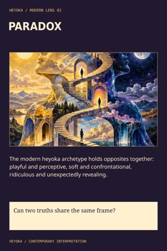
Heyoka lens: Paradox
Psychedelic concept card · Celestial paradox · Heyoka-specific content · Editable layout
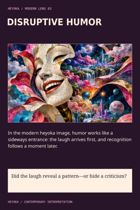
Heyoka lens: Disruptive humor
Psychedelic concept card · Cosmic carnival · Heyoka-specific content · Editable layout
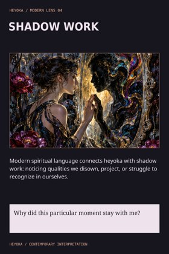
Heyoka lens: Shadow work
Psychedelic concept card · Mystical shadow garden · Heyoka-specific content · Editable layout
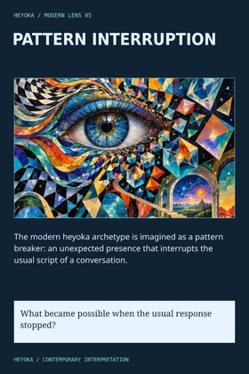
Heyoka lens: Pattern interruption
Psychedelic concept card · Prismatic psychedelia · Heyoka-specific content · Editable layout
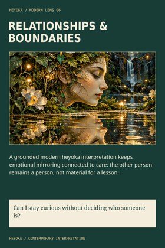
Heyoka lens: Relationships & boundaries
Psychedelic concept card · Botanical dreamscape · Heyoka-specific content · Editable layout
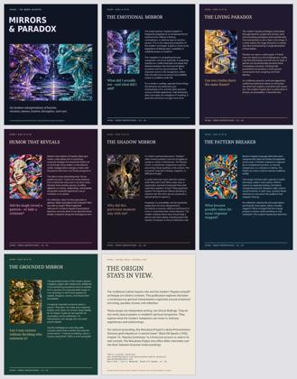
Heyoka: mirrors & paradox
Eight illustrated editorial pages · Six substantive modern interpretations · Rich text and embedded fonts · PDF + offline presenter
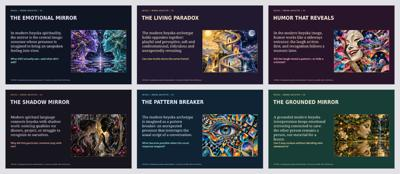
Heyoka: six modern lenses
Six art-led slides · Editable PowerPoint · Surreal art and editable typography · Offline HTML presenter
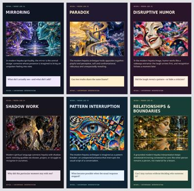
Heyoka: the illustrated carousel
Six illustrated cards · Subject-specific modern concepts · Individual PNG exports · Multi-page PDF
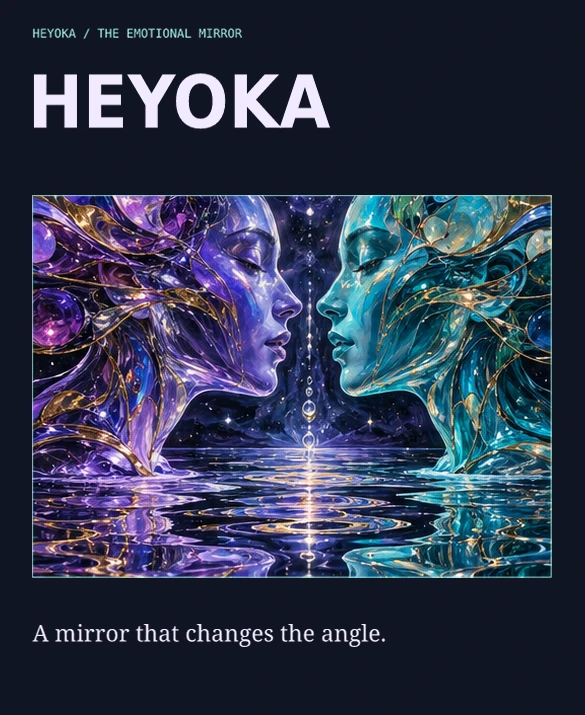
Heyoka: the living mirror
Psychedelic image motion · Three-second loop · Native keyframe tracks · Animated GIF and WebP
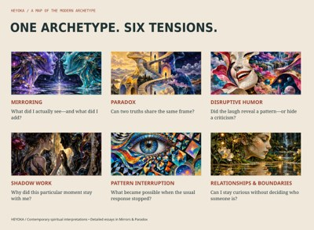
Heyoka: one archetype, six tensions
Six surreal illustrations · Wide-format archetype map · Native crops and editable lettering · PDF and SVG
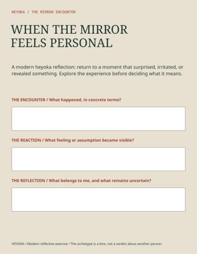
Heyoka: the mirror encounter
Heyoka-specific reflective prompts · Multiline PDF form fields · Print and interactive versions · Editable master